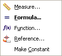

设计逻辑
设计逻辑让您可以在指定特征参数时定义链接到表达式、测量或者其它值。
这个操作并非剪切和粘贴值到输入框中，您可以点击位于参数输入区域旁的向下箭头按钮  以访问设计逻辑选项。
以访问设计逻辑选项。
以下选项在大多数参数输入框中可用。

测量
测量长度或对象间的距离，并将结果值插入参数输入区域。
公式
将打开表达式对话框，在此对话框中您可以为参数输入创建一个公式。
函数
将打开插入函数对话框，在此对话框中您可以选择一个函数并将其插入到参数输入区域。
参考
选择图形窗口或部件导航器中的一个特征，以在参数选择对话框中显示该特征的表达式。